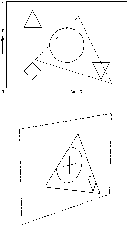
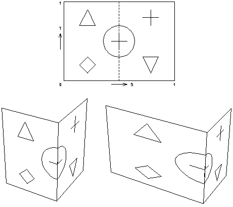

Previous
-- Next
TEXTURE MAPPING
- Principle
paste images on faces or wrap images around shapes
display these images in proper perspective projection
add realistic detail to environment without increasing the polygon count
however: perspective distortion of images in real time requires considerable
computing power and memory
- Textures
A texture is a 2-dimensional digital image stored in the form of a bitmap (with
pixels, resolution, multiple bits per pixel for color and transparency).
A texture can be
- a scanned image or photograph
- a computer generated image
- the content of the current bitmap (screen copy)
- any digital image, e.g., found on the WWW (JPEG, GIF, ..)
- a digital movie (MPEG video)
- generated by a function
- Mapping
2D texture coordinates are mapped (linked, stitched) to the vertices of one
or more 3D polygons.
Number of texture coordinates for extracted piece must match number of polygon
vertices. A single piece can be mapped over several polygons.
If 3D polygon vertices describe a curved shape, texture will be wrapped around
shape.

Mapping the same texture on two different polygons

Mapping a triangular cutout on a 3-sided polygon

Wrapping a texture around a shape,
stretching part of texture over one polygon
Previous
-- Next